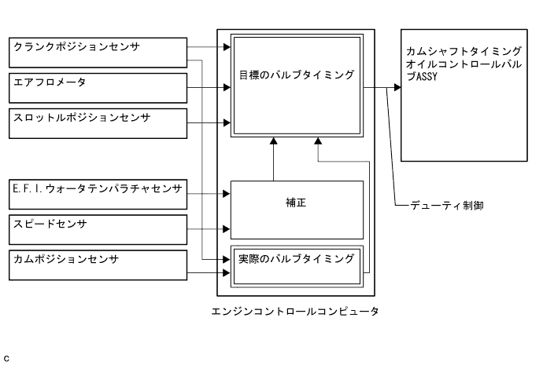

DTC P0016/18 VVT Sensor (Out of Range) |

| DTCNo. SAE/TCCS | DTC Detection Conditions 1. Diagnosis conditions 2. Malfunction status 3. Malfunction duration 4. Other | Inspection Area |
|---|---|---|
| P0016/18 |
|
|
| Step 1 | Inspect Valve Timing |
Timing Inspection
Remove the cylinder head cover.
Turn the crankshaft clockwise and align the notch of the crankshaft pulley with the 0° position.
 |
Check that the timing marks of the camshaft timing gear are aligned as shown in the illustration. If the marks are not aligned, turn the crankshaft clockwise 1 more revolution.
|
| ||||
| OK | ||
| ||
 for procedure)
for procedure)